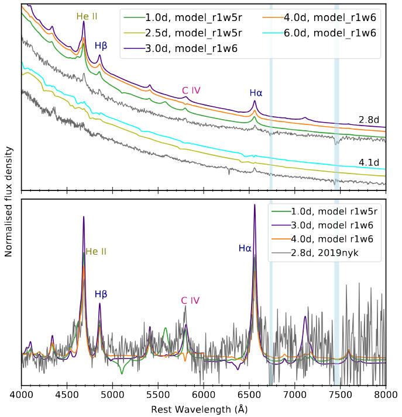

SN 2019nyk: a rapidly declining Type II supernova with early interaction signatures
R. Dastidar, G. Pignata et al. · A&A, 685, A44 (2024)
Early spectra of SN 2019nyk exhibit high-ionisation emission features and narrow H Balmer lines persisting until 4.1 days after explosion, indicating circumstellar material (CSM) in close proximity. Comparison with literature models indicates a mass-loss rate of 10⁻³ M☉ yr⁻¹. A discrepancy between the CSM density derived from spectral comparisons and that from SNEC hydrodynamical modelling could be resolved by a low-density shell above the high-density CSM inferred from the modelling.